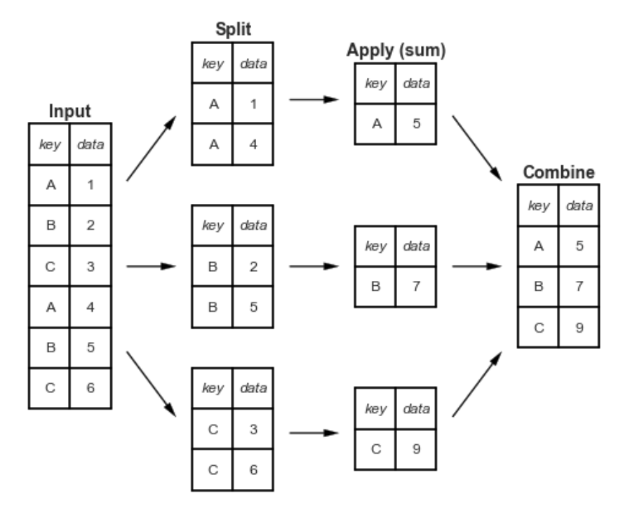

6. Riepilogo dei dati con Pandas#
Il riepilogo dei dati in Pandas è un’attività fondamentale nell’analisi dei dati e consiste nel calcolare statistiche descrittive di un insieme di dati.
6.1. Calcolo delle statistiche descrittive#
Agli oggetti Pandas possono essere applicati vari metodi matematici e statistici. La maggior parte di questi rientra nella categoria della riduzione di dati o delle statistiche descrittive. Rispetto ai metodi degli array NumPy, i metodi Pandas consentono la gestione dei dati mancanti. Alcuni dei metodi disponibili per gli oggetti Pandas sono elencati di seguito.
Method |
Description |
|---|---|
count |
Number of non-NA values |
describe |
Compute set of summary statistics |
min, max |
Compute minimum and maximum values |
argmin, argmax |
Compute index locations (integers) at which minimum or maximum value is obtained, respectively; not available on DataFrame objects |
idxmin, idxmax |
Compute index labels at which minimum or maximum value is obtained, respectively |
quantile |
Compute sample quantile ranging from 0 to 1 (default: 0.5) |
sum |
Sum of values |
mean |
Mean of values |
median |
Arithmetic median (50% quantile) of values |
mad |
Mean absolute deviation from mean value |
prod |
Product of all values |
var |
Sample variance of values |
std |
Sample standard deviation of values |
skew |
Sample skewness (third moment) of values |
kurt |
Sample kurtosis (fourth moment) of values |
cumsum |
Cumulative sum of values |
cummin, cummax |
Cumulative minimum or maximum of values, respectively |
cumprod |
Cumulative product of values |
diff |
Compute first arithmetic difference (useful for time series) |
pct_change |
Compute percent changes |
Tali metodi possono essere applicati a tutto il DataFrame, oppure soltanto ad una o più colonne.
import pandas as pd
import numpy as np
import statistics as st
Per fare un esempio, esamineremo nuovamente i dati penguins.csv. Come in precedenza, dopo avere caricato i dati, rimuoviamo i dati mancanti.
df = pd.read_csv('data/penguins.csv')
df.dropna(inplace=True)
Usiamo il metodo describe() su tutto il DataFrame:
df.describe(include='all')
| species | island | bill_length_mm | bill_depth_mm | flipper_length_mm | body_mass_g | sex | year | |
|---|---|---|---|---|---|---|---|---|
| count | 333 | 333 | 333.000000 | 333.000000 | 333.000000 | 333.000000 | 333 | 333.000000 |
| unique | 3 | 3 | NaN | NaN | NaN | NaN | 2 | NaN |
| top | Adelie | Biscoe | NaN | NaN | NaN | NaN | male | NaN |
| freq | 146 | 163 | NaN | NaN | NaN | NaN | 168 | NaN |
| mean | NaN | NaN | 43.992793 | 17.164865 | 200.966967 | 4207.057057 | NaN | 2008.042042 |
| std | NaN | NaN | 5.468668 | 1.969235 | 14.015765 | 805.215802 | NaN | 0.812944 |
| min | NaN | NaN | 32.100000 | 13.100000 | 172.000000 | 2700.000000 | NaN | 2007.000000 |
| 25% | NaN | NaN | 39.500000 | 15.600000 | 190.000000 | 3550.000000 | NaN | 2007.000000 |
| 50% | NaN | NaN | 44.500000 | 17.300000 | 197.000000 | 4050.000000 | NaN | 2008.000000 |
| 75% | NaN | NaN | 48.600000 | 18.700000 | 213.000000 | 4775.000000 | NaN | 2009.000000 |
| max | NaN | NaN | 59.600000 | 21.500000 | 231.000000 | 6300.000000 | NaN | 2009.000000 |
Se desideriamo solo le informazioni relative alle variabili qualitative, usiamo l’argomento include='object'.
df.describe(include='object')
| species | island | sex | |
|---|---|---|---|
| count | 333 | 333 | 333 |
| unique | 3 | 3 | 2 |
| top | Adelie | Biscoe | male |
| freq | 146 | 163 | 168 |
I valori NaN indicano dati mancanti. Ad esempio, la colonna species contiene stringhe, quindi non esiste alcun valore per mean; allo stesso modo, bill_length_mm è una variabile numerica, quindi non vengono calcolate le statistiche riassuntive per le variabili categoriali (unique, top, freq).
Esaminimiamo le colonne singolarmente. Ad esempio, troviamo la media della colonna bill_depth_mm.
df["bill_depth_mm"].mean()
17.164864864864867
Per la deviazione standard usiamo il metodo std(). Si noti l’argomento opzionale ddof:
df["bill_length_mm"].std(ddof=1)
5.46866834264756
La cella seguente fornisce l’indice della riga nella quale la colonna bill_length_mm assume il suo valore massimo:
df["bill_length_mm"].idxmax()
185
La colonna species nel DataFrame df è una variabile a livello nominale. Elenchiamo le modalità di tale variabile.
df["species"].unique()
array(['Adelie', 'Gentoo', 'Chinstrap'], dtype=object)
Il metodo value_counts ritorna la distribuzione di frequenza assoluta:
df["species"].value_counts()
Adelie 146
Gentoo 119
Chinstrap 68
Name: species, dtype: int64
Per le frequenze relative si imposta l’argomento normalize=True:
print(df["species"].value_counts(normalize=True))
Adelie 0.438438
Gentoo 0.357357
Chinstrap 0.204204
Name: species, dtype: float64
6.1.1. Aggregazione dei dati#
Il riepilogo di più valori in un unico indice va sotto il nome di “aggregazione” dei dati. Il metodo aggregate() può essere applicato ai DataFrame e restituisce un nuovo DataFrame più breve contenente solo i valori aggregati. Il primo argomento di aggregate() specifica quale funzione o quali funzioni devono essere utilizzate per aggregare i dati. Molte comuni funzioni di aggregazione sono disponibili nel modulo statistics. Ad esempio:
median(): la mediana;mean(): la media;stdev(): la deviazione standard;
Se vogliamo applicare più funzioni di aggregazione, allora possiamo raccogliere prima le funzioni in una lista e poi passare la lista ad aggregate().
summary_stats = [min, st.median, st.mean, st.stdev, max]
df.aggregate(summary_stats)
/var/folders/hl/dt523djx7_q7xjrthzjpdvc40000gn/T/ipykernel_97855/2658124353.py:2: FutureWarning: ['species', 'island', 'sex'] did not aggregate successfully. If any error is raised this will raise in a future version of pandas. Drop these columns/ops to avoid this warning.
df.aggregate(summary_stats)
| species | island | bill_length_mm | bill_depth_mm | flipper_length_mm | body_mass_g | sex | year | |
|---|---|---|---|---|---|---|---|---|
| min | Adelie | Biscoe | 32.100000 | 13.100000 | 172.000000 | 2700.000000 | female | 2007.000000 |
| median | Chinstrap | Dream | 44.500000 | 17.300000 | 197.000000 | 4050.000000 | male | 2008.000000 |
| mean | NaN | NaN | 43.992793 | 17.164865 | 200.966967 | 4207.057057 | NaN | 2008.042042 |
| stdev | NaN | NaN | 5.468668 | 1.969235 | 14.015765 | 805.215802 | NaN | 0.812944 |
| max | Gentoo | Torgersen | 59.600000 | 21.500000 | 231.000000 | 6300.000000 | male | 2009.000000 |
Si noti che Pandas ha applicato le funzioni di riepilogo a ogni colonna, ma, per alcune colonne, le statistiche riassuntive non si possono calcolare, ovvero tutte le colonne che contengono stringhe anziché numeri. Di conseguenza, vediamo che alcuni dei risultati per tali colonne sono contrassegnati con “NaN”. Questa è un’abbreviazione di “Not a Number”, talvolta utilizzata nell’analisi dei dati per rappresentare valori mancanti o non definiti.
Molto spesso vogliamo calcolare le statistiche descrittive separatamente per ciascun gruppo di osservazioni – per esempio, nel caso presente, potremmo volere distinguere le statistiche descrittive in base alla specie dei pinguini. Questo risultato si ottiene con il metodo .groupby().
Il nome “group by” deriva da un comando nel linguaggio del database SQL, ma forse è più semplice pensarlo nei termini coniati da Hadley Wickham: split, apply, combine. Un esempio canonico di questa operazione di split-apply-combine, in cui “apply” è un’aggregazione di sommatoria, è illustrato nella figura seguente:
{kind=link}
La figura rende chiaro ciò che si ottiene con groupby:
la fase “split” prevede la suddivisione e il raggruppamento di un DataFrame in base al valore della chiave specificata;
la fase “apply” implica il calcolo di alcune funzioni, solitamente un’aggregazione, una trasformazione o un filtro, all’interno dei singoli gruppi;
la fase “combine” unisce i risultati di queste operazioni in una matrice di output.
Per esempio, ragruppiamo le osservazioni body_mass_g in funzione delle modalità della variabile species.
grouped = df["body_mass_g"].groupby(df["species"])
grouped
<pandas.core.groupby.generic.SeriesGroupBy object at 0x15b8d8cd0>
Calcoliamo ora la media della variabile body_mass_g separatamente per ciascun gruppo di osservazioni.
grouped.mean()
species
Adelie 3706.164384
Chinstrap 3733.088235
Gentoo 5092.436975
Name: body_mass_g, dtype: float64
È possibile applicare criteri di classificazione multipli. Per fare un altro esempio, contiamo il numero di pinguini presenti sulle tre isole, distinguendoli per specie e genere.
df.groupby(["island", "species", "sex"]).size()
island species sex
Biscoe Adelie female 22
male 22
Gentoo female 58
male 61
Dream Adelie female 27
male 28
Chinstrap female 34
male 34
Torgersen Adelie female 24
male 23
dtype: int64
Con il metodo aggregate() possiamo applicare diverse funzioni di aggregazione alle osservazioni ragruppate. Ad esempio
summary_stats = [st.mean, st.stdev]
df.groupby(["species"]).aggregate(summary_stats)
/var/folders/hl/dt523djx7_q7xjrthzjpdvc40000gn/T/ipykernel_97855/2686510896.py:2: FutureWarning: ['island', 'sex'] did not aggregate successfully. If any error is raised this will raise in a future version of pandas. Drop these columns/ops to avoid this warning.
df.groupby(["species"]).aggregate(summary_stats)
| bill_length_mm | bill_depth_mm | flipper_length_mm | body_mass_g | year | ||||||
|---|---|---|---|---|---|---|---|---|---|---|
| mean | stdev | mean | stdev | mean | stdev | mean | stdev | mean | stdev | |
| species | ||||||||||
| Adelie | 38.823973 | 2.662597 | 18.347260 | 1.219338 | 190.102740 | 6.521825 | 3706.164384 | 458.620135 | 2008.054795 | 0.811816 |
| Chinstrap | 48.833824 | 3.339256 | 18.420588 | 1.135395 | 195.823529 | 7.131894 | 3733.088235 | 384.335081 | 2007.970588 | 0.863360 |
| Gentoo | 47.568067 | 3.106116 | 14.996639 | 0.985998 | 217.235294 | 6.585431 | 5092.436975 | 501.476154 | 2008.067227 | 0.789025 |
Nella cella seguente troviamo la media di body_mass_g e flipper_length_mm separatamente per ciascuna isola e ciascuna specie:
df.groupby(["island", "species"])[["body_mass_g", "flipper_length_mm"]].mean()
| body_mass_g | flipper_length_mm | ||
|---|---|---|---|
| island | species | ||
| Biscoe | Adelie | 3709.659091 | 188.795455 |
| Gentoo | 5092.436975 | 217.235294 | |
| Dream | Adelie | 3701.363636 | 189.927273 |
| Chinstrap | 3733.088235 | 195.823529 | |
| Torgersen | Adelie | 3708.510638 | 191.531915 |
Facciamo la stessa cosa per la deviazione standard.
df.groupby(["island", "species"])[["body_mass_g", "flipper_length_mm"]].std(ddof=1)
| body_mass_g | flipper_length_mm | ||
|---|---|---|---|
| island | species | ||
| Biscoe | Adelie | 487.733722 | 6.729247 |
| Gentoo | 501.476154 | 6.585431 | |
| Dream | Adelie | 448.774519 | 6.480325 |
| Chinstrap | 384.335081 | 7.131894 | |
| Torgersen | Adelie | 451.846351 | 6.220062 |
Prestiamo attenzione alla seguente sintassi:
summary_stats = (
df.loc[:, ["island", "species", "body_mass_g", "flipper_length_mm"]]
.groupby(["island", "species"])
.aggregate(["mean", "std", "count"])
)
summary_stats
| body_mass_g | flipper_length_mm | ||||||
|---|---|---|---|---|---|---|---|
| mean | std | count | mean | std | count | ||
| island | species | ||||||
| Biscoe | Adelie | 3709.659091 | 487.733722 | 44 | 188.795455 | 6.729247 | 44 |
| Gentoo | 5092.436975 | 501.476154 | 119 | 217.235294 | 6.585431 | 119 | |
| Dream | Adelie | 3701.363636 | 448.774519 | 55 | 189.927273 | 6.480325 | 55 |
| Chinstrap | 3733.088235 | 384.335081 | 68 | 195.823529 | 7.131894 | 68 | |
| Torgersen | Adelie | 3708.510638 | 451.846351 | 47 | 191.531915 | 6.220062 | 47 |
Nell’istruzione precedente selezioniamo tutte le righe (:) di tre colonne di interesse: df.loc[:, ["island", "species", "body_mass_g", "flipper_length_mm"]]. L’istruzione .groupby(["island", "species"]) ragruppa le osservazioni (righe) secondo le modalità delle variabili island e species. Infine .aggregate(["mean", "std", "count"]) applica i metodi statistici specificati a ciascun gruppo di osservazioni. Con questa sintassi la sequenza delle operazioni da eseguire diventa molto intuitiva.
È possibile approfondire questo argomento consultanto il capitolo 10 del testo Python for Data Analysis di McKinney [McK22].
6.2. Watermark#
%load_ext watermark
%watermark -n -u -v -iv -w
Last updated: Mon May 29 2023
Python implementation: CPython
Python version : 3.11.3
IPython version : 8.13.2
numpy : 1.23.5
pandas: 1.5.3
Watermark: 2.3.1